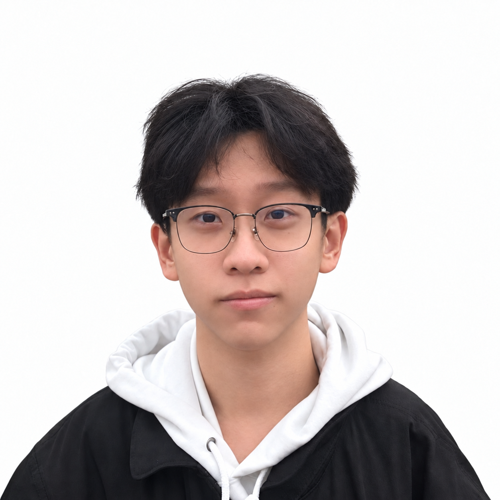
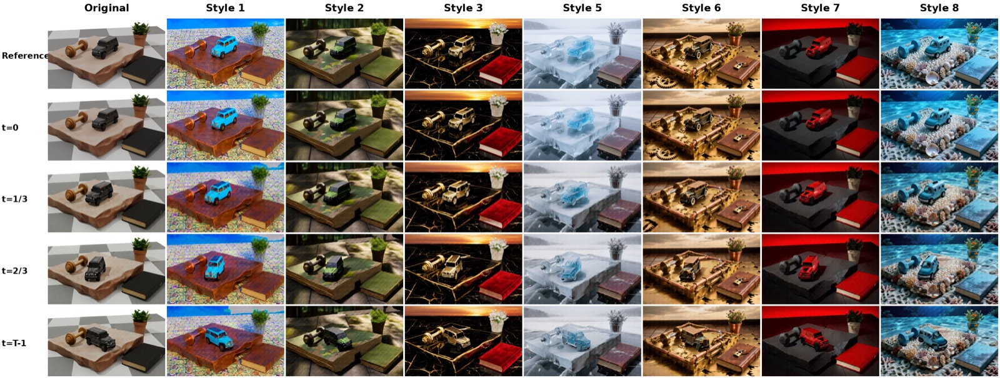

Feedforward 3D Editing
Feedforward 3D Editing

Henghaofan Zhang
About me. I am an undergraduate student in Software Engineering at the University of Electronic Science and Technology of China (UESTC), where I have studied since September 2023. Since January 2026, I have also been a research intern at the Institute for AI Industry Research (AIR), Tsinghua University, working on 3D/4D vision and generative models.
My research interests. I am interested in 3D/4D reconstruction and generation, physically grounded world models and spatial intelligence, and structured multimodal generation with LLMs. A common thread is how explicit structure can make generated worlds easier to edit, control, and simulate. My work explores this through semantic-part-aware 3D editing (PartFlow), simulation-ready 4D reconstruction from video (OVOW), editable reconstruction of objects and lighting (Lumera), and mesh-conditioned video generation (DAR). These projects connect geometric and physical representations with generative models, informing my broader interest in controllable multimodal systems.
Recently. I have been exploring how executable code and discrete tokens can represent images, video, audio, and scenes, and how LLMs could use these representations for unified multimodal generation and editing. I am particularly interested in composing such content into coherent films, interactive scenes, and games. I am seeking MPhil / PhD opportunities for Fall 2027 and am also open to visiting student and research internship opportunities. If our research interests align, please get in touch.
Publications
Feedforward 3D Editing
 Video to Physical 4D
Video to Physical 4D
 Engine-Native Worlds
Engine-Native Worlds

4D Generative RenderingUnder Review04
Video Models as Native 4D Renderers: World-Grounded Conditioning from Animated Mesh
DAR turns a pretrained video diffusion model into a reference-guided 4D renderer, using animated meshes, camera trajectories, and tracking, world-position, and normal buffers to control scene motion and appearance.
Outside research, I enjoy building Gunpla, playing FPS games, and listening to music.